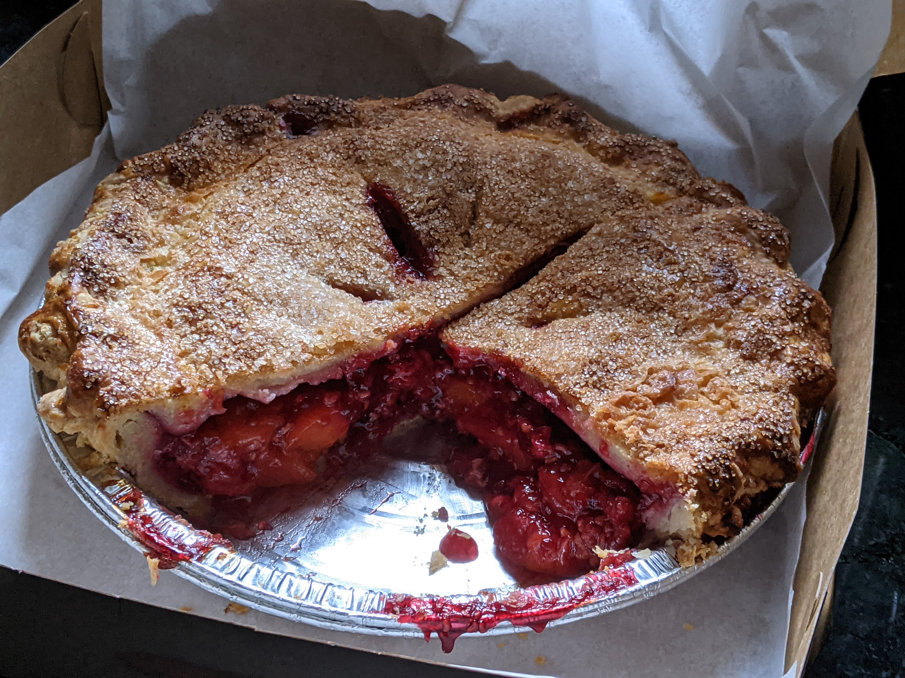

Old Village Bakery Pie

It's hard to beat a fresh pie, especially when it's filled with delicious in-season berries! Follow this recipe to recreate your
favorite Old Village Bakery pies. Crust recipe is proprietary and thus not included.
Ingredients
- Fruit, 2.25 lbs
- Crust, either double crust or crumb top
- Sugar, 1 cup
- Tapioca, 1/4 cup
- Kosher salt, one pinch
Steps
- Roll out crust, and place into pie tin. Crimp edges (if crumb top) and chill in fridge.
- Mix pie fruit in bowl with sugar, tapioca, salt, then let sit for at least 10 minutes.
- Pour fruit into pie shell, top with crumb (or double crust and crimp).
- If double crust, egg wash top, sprinkle with sanding sugar, then score.
- Bake for ~60 minutes, starting at 450ºF and lowering to 325ºF after 20 minutes.
- Tent with an additional pie tin if it becomes too dark while baking.
- Let cool fully before serving.
Return to main page